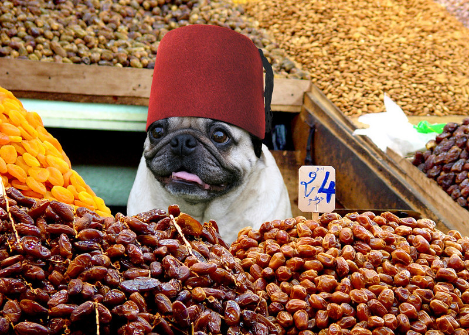

El proyecto
 Ja & Jo nace en 2019 en Almeria (España) Con afán de lucro, dos estudiantes de ASIR montan un proyecto de comercio virtual. En primer lugar, se familiarizan con las herramientas Visual Studio Code y GitHub. En 2019, Ja&Jo abre su primera tienda virtual. Se trata de un e-rastrillo, una tienda donde los objetos que se venden no siguen absolutamente ningún criterio. La pésima calidad de sus productos no tarda en cosechar terribles críticas y aparecen numerosos chistes en Twitter sobre los mismo.
En apenas seis meses de funcionamiento, la página web aparece registrada en knowyourmeme, la conocida
base de datos sobre memes de internet. Gracias al poder de las redes sociales y la cultura demodé, la
página recibe gran tráfico de visitas
y apenas puede abastecer a los clientes de las fruslerías, cachivaches y baratijas que marcan tendencia
este año.. En Octubre, Ja&Jo firma un contrato con Harley-Davidson y Xiaomi para distribuir una edición
de coleccionista del primer
híbrido entre patinete eléctrico y motocicleta de alta cilindrada. Apenas se distribuyeron 2500
unidades, 1000 de las cuales quedaron en El Ejido, cambiando para siempre el día a día del municipio y
siendo nuevo punto de interés turístico.
En Diciembre, Ja & Jo se convierte en un gigante de las curiosidades. Tras absorber las grandes
corporaciones nacionales de atrapasueños, aceites esenciales y juguetes para roedores llegan las
primeras discusiones entre sus dos fundadores.
Incapaces de solucionar sus diferencias, ambos fundadores dejan Ja&Jo en segundo plano para centrarse en
sus proyectos personales. Ja&Jo se mantiene abierta y en funcionamiento hasta que los dos socios se
pongan de acuerdo en si es mejor el Pro Evolution Soccer o el FIFA.